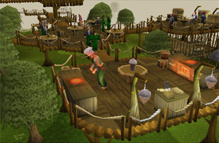
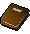
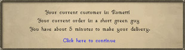
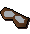

")
Cooking - Gnome Restaurant
Introduction | Location | Requirements | Recommended Items | Cooking and Delivery | Rewards | Development Team
In order to use this feature you have to be a RuneScape member. Please subscribe to get this feature.
Please note this is a 'Safe' task. There is nothing to kill you here, unless you are poisoned, or take damage making a delivery.
Introduction

If you have the Cooking skill and speed to deliver anywhere in RuneScape, maybe a job in the gnome fast food business is for you!
This task ties in directly with the new and improved gnome cooking, so it is advisable you read over that article first.
Location

The Grand Tree is located in the Tree Gnome Stronghold, north west of East Ardougne.
Those who have completed The Grand Tree will find access to the glider network is not only beneficial to delivery, but also getting back to the Grand Tree to take another order.
Requirements
To play this task, you must have at least level 29 Cooking to complete the training section. While level 29 Cooking will mean you can play most of this task, it is ideal to have 42 Cooking or more, so that you can make everything on the gnome menu, and hence satisfy any order that gets placed.
Although not a requirement to play, having completed The Grand Tree will give a massive advantage when delivering hard orders, as the gnome glider network is extremely useful for traversing RuneScape at speed.
Recommended Items
As the world of fast food is fast(!), it is advisable that you keep your weight down to ensure you have plenty of energy to run around with.
|  | Gianne's gnome cookbook is vital when learning about gnome cuisine. It contains all of the recipes you will need, so it is advisable you have a copy with you at all times for quick reference when you are competing against the clock to complete an order.
If you have lost your cookbook, you can buy another cheaply from Hudo's food shop, just north of Gianne Sr. |
|
![[image]](../../img/main/kbase/minigames/gnomecooking/cocktail_book.gif) |
Similarly, it is advisable to take a copy of the cocktail book with you, as some orders will be for gnome drinks. For this reason, it is beneficial that you have the book on hand to get your recipe quickly.
If you have lost your cookbook, you can buy another cheaply from the food shop, near Blurberry's bar. |
|
![[image]](../../img/main/kbase/items/misc/coins.gif) |
When an order comes in, it is wise to head straight to the gnome shops to buy any supplies/tins or dough you will need. You may also find that dependant on your method of transportation. You will need to pay for ships/gates to get around the world. |
Cooking and Delivery

It does not matter in what order you complete the training programmes, but they both must be completed if you wish to participate in the business.
The map to the left shows the location of the key people you need to speak with when training.
Training part I - Gianne Sr (food)
Gianne Sr. is happy to welcome budding chefs and will happily provide you with your first copy of his cookbook, along with any ingredients you may need for his training program. If you burn or misuse the items he gives you, replacements can be bought from Hudo's foodshop nearby.To complete Gianne's training and get his recommendation, you will need to prepare and give him the following:
- Toad crunchies (level 10 Cooking required)
- Choc chip crunchies (level 16 Cooking required)
- Toad batta (level 26 Cooking required)
- Cheese and tomato batta (level 29 Cooking required)
When these are complete - and of course, when Gianne has taste-tested them - he will give you his recommendation.
Training part II - Blurberry (drinks)
An expert of all things 'gnome cocktail', Blurberry will welcome anyone with an interest in following his training and becoming skilled in making gnomish concoctions. Similarly to Gianne Sr, Blurberry will provide you with a copy of the cocktail guide and then proceed to ask you to make him items from it. He will provide all the items you need first time, but if you get it wrong or need more, then speak to Heckel Funch - found running the food shop nearby.To complete Blurberry's training and get his recommendation, you will need to mix and give him the following:
- Fruit Blast (level 6 Cooking required)
- Pineapple Punch (level 8 Cooking required)
- Wizard Blizzard (level 18 Cooking required)
- Short Green Guy (level 20 Cooking required)
Blurberry has a strong stomach for drinking cocktails one after the other, so don't be surprised when he is still standing after the Short Green Guy and gives you your recommendation for Gianne Jr.
The Delivery Service
Welcome to the Aluft Aloft Food Delivery service! When you have located Gianne Jr, he will explain how the game works, and what rewards you can get from it.![[image]](../../img/main/kbase/minigames/gnomecooking/gianne_snr.gif) When you speak with Gianne Jr, you will find that he is constantly on the phone, taking orders from all around RuneScape. There are easy orders and there are hard orders.
When you speak with Gianne Jr, you will find that he is constantly on the phone, taking orders from all around RuneScape. There are easy orders and there are hard orders.
- Easy - easy orders are from hungry or thirsty gnomes in the Stronghold only. On average, you are given 5-6 minutes to complete an easy order.
- Hard - hard orders will come from gnomes across the lands; be it a thirsty gnome stranded in the desert, or a hungry gnome spying on monkeys. On average you are given around ten minutes to complete a hard order.

If you turn down a hard order then you cannot take another hard order for five minutes. When turning down an easy order, this time is much less (1-2 minutes). The gnomes calling for deliveries have strict timescales for when they want their food/drink, so be warned that if you log out during a delivery, the time continues, making it likely that when you log back in, the delivery time has passed.
The aim of the game is to gain at least 12 'credits', which are earned through making deliveries.
For completing a easy order, you will receive 1 credit and a cash based tip.
For completing a hard order, you will receive 3 credits and some cash/item based tip.
12 credits gets you one item on the reward token (see the rewards section below). As this token can hold up to 10 items of food or drink, the maximum credits you can get is 120. You can continue delivering after this for tips; however, no more items will be added to the token.
Rewards
Aside from the Cooking experience you receive for mixing drinks and Cooking food, you can also get other useful and unique items (as well as cash) from deliveries. For the experience you will receive from Cooking gnomish recipes, check the Gnome cooking page.
The reward token
![[image]](../../img/main/kbase/minigames/gnomecooking/reward_token.gif) As you will have gathered, the gnomes only deliver to gnomes, so you should be honoured that when you get 12 credits, you are presented with the reward token. You can only have 1 token at any one time, and it only has one use, so make sure you use it when you really want to.
As you will have gathered, the gnomes only deliver to gnomes, so you should be honoured that when you get 12 credits, you are presented with the reward token. You can only have 1 token at any one time, and it only has one use, so make sure you use it when you really want to.
Right-clicking shows the options that you have. Clicking the 'check' option shows how many items you can have delivered if you 'activate' it. This number will go up by one for every 12 credits you receive by completing orders. You can have a maximum of ten items.
![[image]](../../img/main/kbase/minigames/gnomecooking/delivery_gnome.gif) When you activate the token, the gnomes will pinpoint your location in RuneScape, and then after a short wait, the food/drinks will arrive - terrorchick style!
When you activate the token, the gnomes will pinpoint your location in RuneScape, and then after a short wait, the food/drinks will arrive - terrorchick style!
When the gnome has made his big announcement of your order, he will pass you the amount of items you are permitted (found again by 'checking' the token). These items will be randomly selected from the gnome food and drink menu, but effectively means you could be carrying ten food items in one inventory slot (please remember that the food, when delivered, will require ten free slots).
Hard delivery item tips
Aside from getting items such as gnome balls, gems, herbs or even half keys, there are a few unique items that you may randomly receive as a tip for completing a hard order.![[image]](../../img/main/kbase/minigames/gnomecooking/mint_cake.gif) |
Gnomish mint cake Gnomes are known for Agility, shortcuts and speeding up travel; maybe they are so fast because they eat mint cakes which restore 100% of your run energy. |
|
|  | Gnome goggles Did you ever want to be a gnome pilot? Now is your chance with these spiffing goggles! |
|
![[image]](../../img/main/kbase/minigames/gnomecooking/gnome_scarf.gif) |
Gnome scarf Even gnomes have to keep warm! Some make their way to the top of mountains after all, so as a random reward, you may receive this uniquely styled scarf. |
The grand seed pod
![[image]](../../img/main/kbase/minigames/gnomecooking/seed_pod.gif) Again, as a random reward, you may receive a grand seed pod; a seed pod from the Grand Tree itself. This item will be destroyed on use; however, it is tradeable and stackable.
Again, as a random reward, you may receive a grand seed pod; a seed pod from the Grand Tree itself. This item will be destroyed on use; however, it is tradeable and stackable.
The Grand Tree is a tree like no other - it has magical properties of some sorts, and so do the pods from which it grew.
If you receive this item, aside from the fact they are stackable, they also have a few uses, found on the right-click menu.
If you 'squash' the pod, you will soon notice that the roots of the Grand Tree appear, and pull you back to the main room of the Grand Tree, where the King resides. For squashing a pod so precious, you will temporarily lose 5 Farming levels. If you continue to squash pods, this effect will continue.
If you 'launch' the pod, it sends a signal (outdoor use only) into the sky, from which a gnome pilot can see you. He will appear after a short amount of time, and take you to the glider at the top of the Grand Tree. Doing this will also give 100 Farming experience.
Neither of these functions will work in the deeper parts of the Wilderness.
Development Team
Developer: Chihiro Y
Graphics: Linh N
QA: Andy C
Audio: Ian T

More articles in
Cooking
|
|
|
Further Help
If this article does not help you, you may find the following sections of the RuneScape site helpful:
|
|